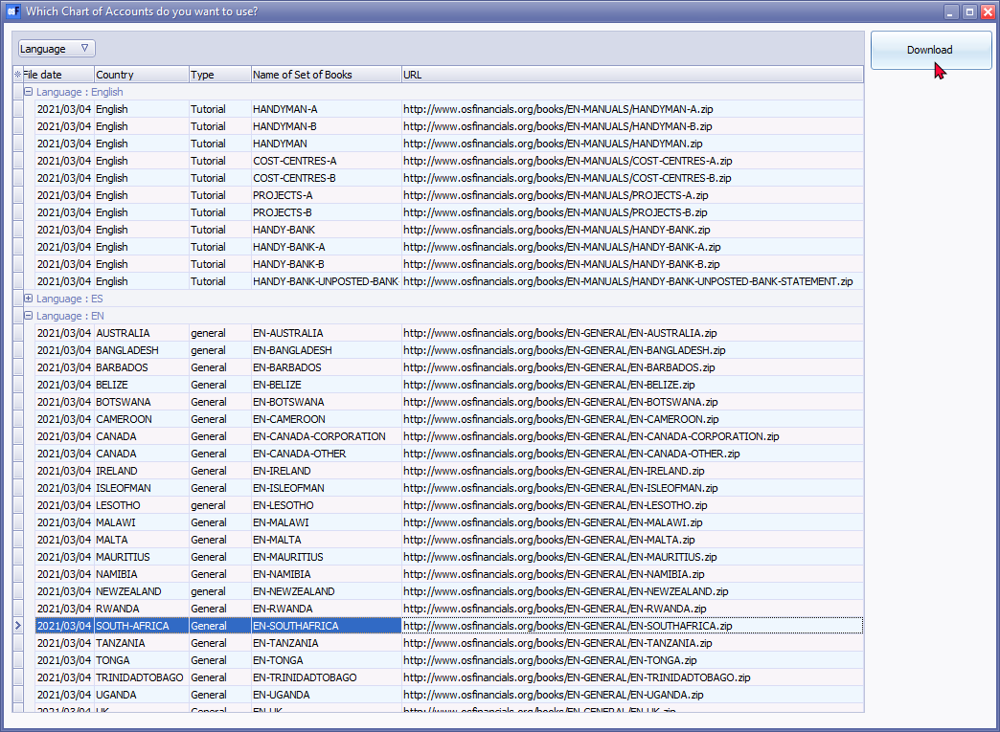
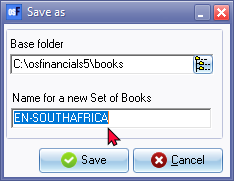

Let osFinancials5 help you to create a Set of Books - Download
osFinancials5 will guide you through the steps to create a new Set of Books with the Creation wizard in a matter of minutes.
It is a good idea to check that you have all the necessary information regarding your business at hand before starting to create your Set of Books.
Once you have the necessary information available, you may proceed to create your Set of Books. Should you not have all the information available at this stage, you may go back and enter or change some of the information at a later stage.
The following options to create a Set of Books using the "Let osFinancials help you to create a Set of Books?" wizard, is available:
- To create a Set of Books using a template on your system.
- To create a Set of Books downloading a template from osFinancials5.
To create a Set of Books downloading a template:
- On the Start ribbon, you can select the Create Set of Books option or simply press the F10 key on your keyboard.

- osFinancials5 automatically defaults to the option "Let osFinancials5 help you to create a Set of Books?", as this is the recommended option for most users. You only need to check that it is selected.
- Click on the Next button. The Download books - "Which Chart of Accounts do you want to use?" screen will automatically be launched. 
|
|
osFinancials5 supports 79 different languages and counties / tax regimes languages liked to 87 Sets of Books (databases) which may be downloaded and customised to meet your requirements. If the set of books for your language and or country, is not available in the books directory, you may select any of the available Firebird Sets of Books and linked languages available as a free download. |

- Select the Chart of Accounts (Set of Books) and click on the Download button. Once the download, is completed, the "Save as" screen will display the Name of the selected downloaded Set of Books.

- Enter a unique name for the Set of Books.
|
|
If the name for the new Set of Books already exists, an information message is displayed: That Set of Books already exists! Please re-enter! Enter a new name for the Set of Books. |

- Click Save. The following information message is displayed:
Set of Books created!
- Click OK. The Set of Books will automatically be opened.
|
|
Year-end confirmation Should you open the Set of Books, and the date of the end of the year, is in the past, a confirmation message will be displayed, for example; This year Ends on 2022/02/28 You need to adjust the Start of the financial year in one of the following options on the Setup ribbon:
|
- To complete and configure the downloaded Set of Books for your needs, it is recommended that you first check enter, add and select the necessary information and settings:
- Accounts - Check the Chart of Accounts. Add any accounts required. You may also Disable or Delete any accounts that you do not require. Specific attention is required with the following account types:
- Tax accounts - Check that the correct tax codes and tax percentages are applicable to your country. You may need to change the descriptions, add tax codes, change the tax percentages, etc.
- Bank accounts - Rename an existing bank account, check your Payments and Receipt batches linked to the bank account. Add any additional bank accounts or delete unnecessary bank accounts.
- Company info - Enter all your business' details such as the address, e-mail address, contact numbers and Company and Tax Registration numbers, which you need to display on all documents, reports, and lists. You may also select whether your default output option for documents, reports and lists are on: screen, printer, file, e-mail or fax. You may also load a logo picture to be displayed on your reports or documents, and set your Windows operating system's default date and currency formats.
- Reporting dates - This option allows you to set up the number of reporting dates required, and the start date of your financial year period. The periods or dates will be displayed in the format in which you have set your Windows Operating System's default date on the previous screen.
- Batch types - This option allows you to create, delete an existing batch type, or change the name of an existing batch type in which you wish to enter and update or post your transactions to the ledger.
- Groups - This option allows you to set up to two Reporting groups for your General ledger, Debtors, Creditors accounts, Stock and Document groups.
- Documents setup - This option allows you to set up your documents Invoices, Credit notes, Quotes, Orders, Purchases and Supplier return documents, you wish to hand to customers (debtors) or suppliers (creditors) when you sell, or quote, or order and purchase, stock items and services.
- Salesperson - This option allows you to enter or add the salespersons who will be processing documents.
- Stock items - Add your stock items (inventory items / products).
- Debtors - Add your debtor (customer / client) accounts.
- Creditors - Add your creditor (supplier / vendor) accounts.